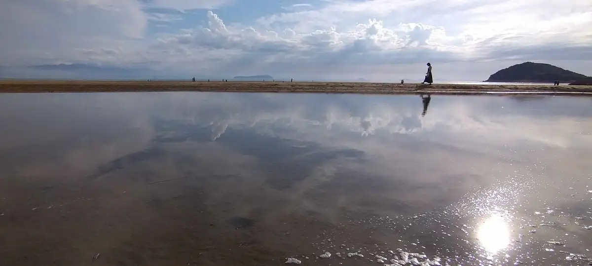
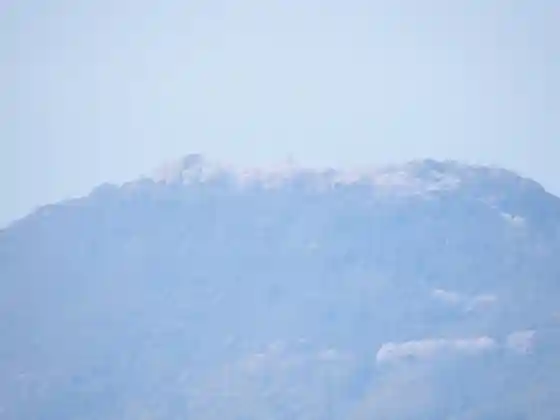
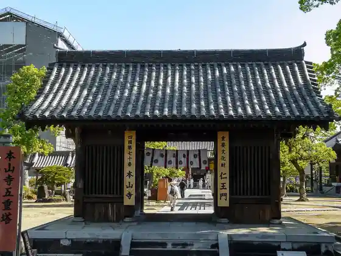
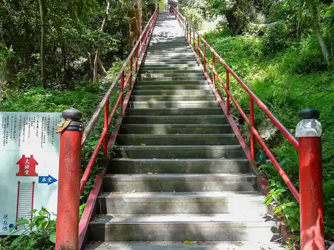
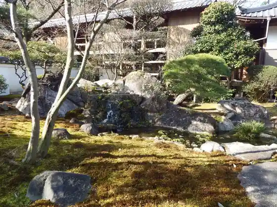

Mitoyo
Mitoyo · Kagawa
Mitoyo
Highlighted on the Kagawa map.

Stay
Tennen Iyadani Onsen Taishi no Yu Fureai Park Mi no
Ru Poru Awashima
Sato no Yado Suyama
Amiiko
Sui ‐Hiuchi‐
Bay Wind
La toile
Omori Shoten
Setochi Urashima Tei / Minpaku
Hyo Bo (Hyobo)
Seki Nagi MOKURASU to (Haku Rutto)
Oshandoggu Resort Fubogahama
Fubogahama Resort Vira SENJA
NIPPONIA Nio Mizukagami no Town
SENJA Dewata
Dining
Setochi Ryori Kado Ie
Izakaya Isshin
Buta Taro Takuma Mise
Ho Don
Taiwan Ryori Jun
Kogane Seimen Tokoro Takase Mise
Teuchi Udon Watanabe
Tokushige
Musashi Takuma Mise
Chiaki
Hama Do Ramen
Pittsua E Baru Tenpio
curry Fuyu Tsubaki
Kaisen Yume Taro
Yakiniku Domburi Aburi Ichiban Yume Taun Mitoyo Mise
Teppei
Onsen
Fureai Park Mi no Rotemburo
Ru Poru Awashima Public Bath
Experience
Roadside Station Takarada no Sato
Sights
Fubogahama
Shiude Yama

Honzan Tera

Ya Tani Tera

Taiko Tera

Tsushima Shrine
Takuma Eki
Fudo Falls